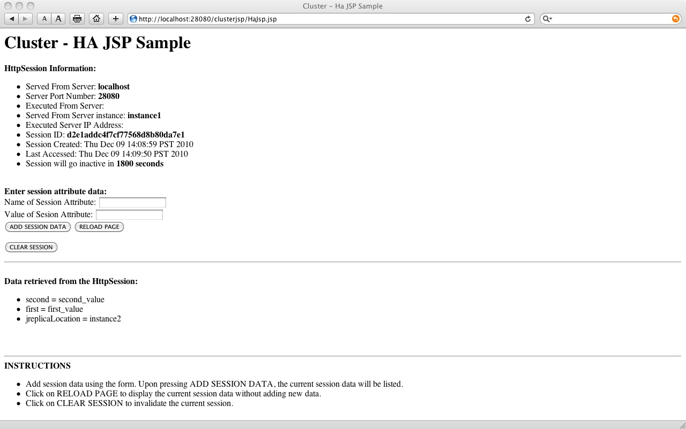
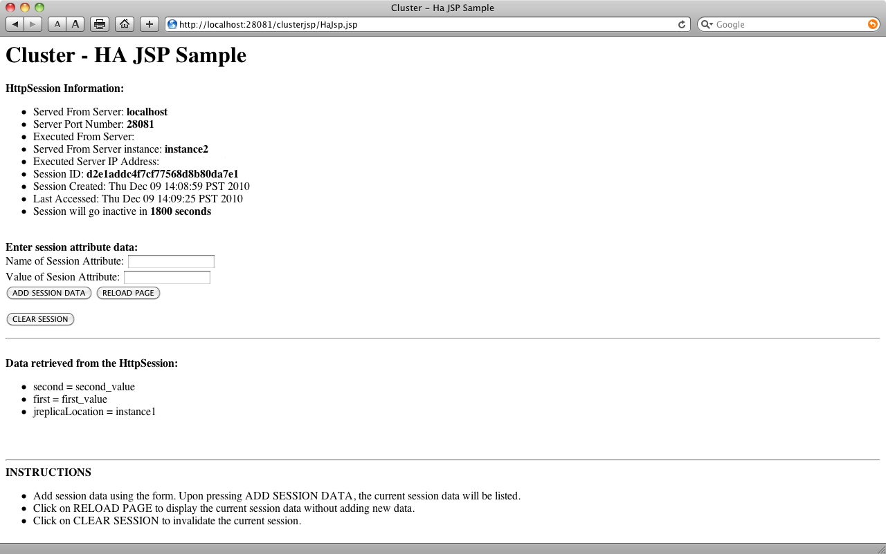

|
Java EE 6 SDK |
The cluster JSP sample application demonstrates how a request to a JSP is shared in all of server instances in a GlassFish cluster.
app_dir is the sample application base
directory: samples_install_dir/javaee6/ha/clusterjsp.app_dir.all
target.app_dir> ant
all
You can replace the ant all command with the
following set of
commands:
app_dir> ant
setup creates and starts a cluster with two instances
app_dir> ant
default compiles and packages the application
app_dir> ant
deploy deploys it to application server
Note: The deploy target will eventually display the URLs of the two instances as follow:
[echo] Application Deployed at: http://localhost:28082/clusterjsp and http://localhost:28083/clusterjsp
Remember the port numbers, for instance in this example Instance1HTTPPort=20802 and Instance2HTTPPort=28083
undeploy to undeploy the application.
app_dir> ant
undeploy
unsetup to stop and delete the cluster and its two instances.
app_dir> ant
unsetup
clean to remove the temporary directories
like build and dist.
app_dir> ant
clean
The objective of this run is to demonstrate clustering and replication of session information across instances in a cluster. We achieve this by doing the following
stop-instance1 target.app_dir> ant stop-instance1
Please see the image below for a sample output of running steps 1 and 2 from above.

Please see the image below for a sample output of running steps 4 and 5 from above.

Copyright © 1997-2010 Oracle and/or its affiliates. All rights reserved.